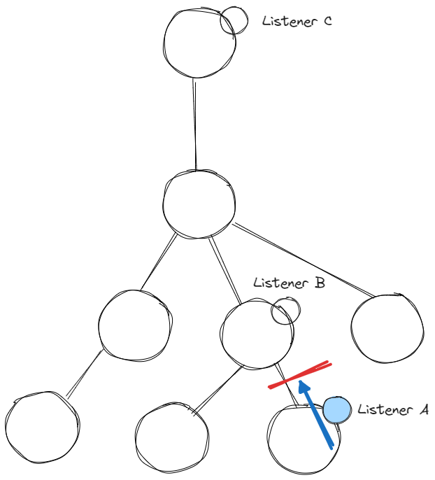

pitfalls and solutions
Martin Winkler
twitter: @winkler_12
mastodon: @mwinkler
blog: https://dev.to/teetotum
github: https://github.com/teetotum
material for this talk: https://github.com/teetotum/material/tree/master/dom-event-cancellation-revised
Apology.
Should've called it DOM Event Handledness
(MDN calls only e.preventDefault() cancelling an event.)
When would I need that?
Event listeners in the fictitious online banking app
const resetSessionTimeout = () => {
secondsTillLockout = sessionTimeoutSeconds;
updateTimeoutUI();
};
document.documentElement.addEventListener("click", resetSessionTimeout);
document.documentElement.addEventListener("keydown", resetSessionTimeout);
should always run - for any click or keydown
colHeader.addEventListener("click", (e) => {
colHeader.classList.toggle("selected");
});
colHeader.querySelector(".sort-asc").addEventListener("click", (e) => {
rows.sort((a, b) => comparer(a, b));
tBody.append(...rows);
});
needs a condition - only one of the two should ever run
const mightClose = (e) => {
if (!popup.contains(e.target)) close();
};
document.documentElement.addEventListener("click", mightClose);
should always run - for any click
// popup code
const handleEscape = (e) => {
if (e.key === "Escape" && isOpen) {
close(e);
}
};
popup.addEventListener("keydown", handleEscape);
// dropdown code
const handleEscape = (e) => {
if (e.key === "Escape" && isOpen) {
close(e);
}
};
dropdown.addEventListener("keydown", handleEscape);
needs a condition - only one of the two should ever run
Two categories of event* listeners:
I postulate: All event* listeners fall into one of the two categories.
* Only regarding browser generated events. Custom events could exhibit a completely different nature, I don't have enough data to form an opinion yet.
First Category:
=> Primary Effect
Second Category:
=> Secondary Effect
Cancellation must ensure that:
First Approach: First listener decides for all later listeners
const handleEscape = (e) => {
if (e.key === "Escape" && isOpen) {
close(e);
e.stopPropagation();
}
};
Pitfalls:
stopPropagation() does not prevent browser default actions, so we would still need to call preventDefault() in addition for events that could trigger a browser default action.
Two event phases: Capturing and Bubbling

Switch all Secondary Effects over to the Capturing phase
Conclusion for first approach
stopPropagation (and preventDefault)stopPropagationSecond Approach: Each listern decides for itself

Primary Effect event listeners must inspect a flag on the event arguments object, decide what to do, and set the flag if they handled the event.
A natural candidate for such a flag is defaultPrevented
const handleEscape = (e) => {
if (e.key === "Escape" && isOpen && !e.defaultPrevented) {
close(e);
e.preventDefault();
}
};
Conclusion for second approach
defaultPreventedpreventDefault if handling the eventpreventDefaultPro & Con
What about cancelable?
All standard DOM events are cancelable. But this can be used with custom events to allow communication whether an intended action should proceed:
if (
this.dispatchEvent(
new Event("try_close", { cancelable: true, bubbles: true })
)
) {
this.close();
this.dispatchEvent(new Event("closed", { bubbles: true }));
} else {
this.dispatchEvent(new Event("close_cancelled", { bubbles: true }));
}
The condition would be false if any listener would have called e.preventDefault.
Whether this rules out the second approach I cannot tell.
What about passive?
Listeners can be declared passive to signal to the browser that they don't call preventDefault so the browser could run the default action before event propagation.
For example: to ensure smooth scolling behavior it is recommended to mark all scroll listeners as passive.
For the second approach this would mean that all Secondary Effects could safely be marked passive, but that none of the Primary Effects could ever be marked passive.
What about shadow DOM?
We should be able to receive UA generated events originating in the shadow DOM.
It seems some interactive elements using a shadow DOM currently swallow events, like <input type="date">, we get neither the Capturing nor the Bubbling phase.
https://github.com/whatwg/html/issues/10343
Custom web component authors have the option to make DOM events from the shadow DOM visible to listeners in the regular DOM via composed + bubbles.
revisit the banking app?